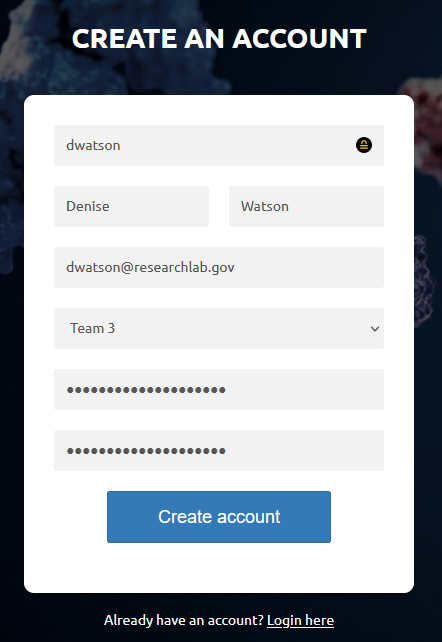
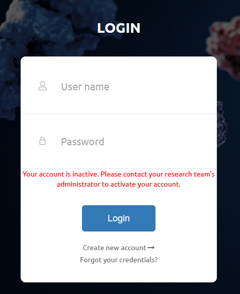

Accessing Quake¶
Creating an Account¶
Let’s assume that your research team has already been set up in Quake by another member of your team (as described here). You can create a new account by following these steps.
From the login screen, click on “Create new account”.
Fill in the registration form with your username, first name, last name, email, and password. Select your team in the Team dropdown box.
Your user needs to be activated by your Team Admin before you can log in.
You should be able to log in immediately after your Team Admin activates you.
{kind=link}
{kind=link}
Logging In¶
From the main page, enter your user name and password to log in to Quake.
{kind=link}
Resetting your Password¶
If you forgot your password, you can trigger a password reset by clicking on the “Forgot your credentials?” link from the login page. Then enter the email address associated with your account and press “Submit”.
{kind=link}
Please contact us with any issues regarding logging in to your account.
Logging Out¶
Select your name on the right side of the upper navigation bar, and click “Logout” from the dropdown menu.
{kind=link}
You will also be logged out if you close your browser window, or after a period of inactivity.
Privacy and Security¶
The data that you create in Quake is only accessible by members of your research team and, if necessary, by the Quake Support Team. Some users may work with all assays created by members of their team, and other users may only be able to access data that they have uploaded.
The level of access that a user has to data, as well as to other features, is configurable by a set of security points granted by their Team Admin. For example, some users may have the security to create, edit, and delete assays. Other users could be set up without delete privileges or with the ability to only delete data that they have created. If you are unable to perform an action or do not have access to data that you require, please contact your Team Admin and describe specifically what action you are unable to perform.